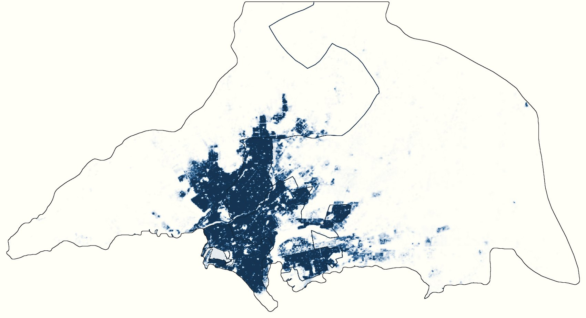
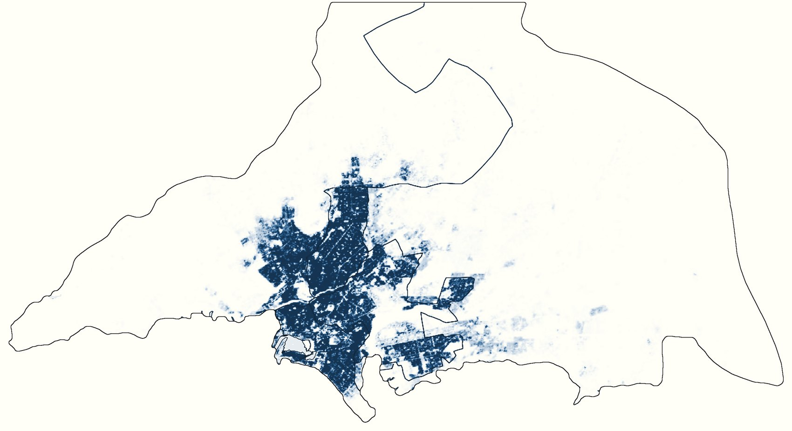
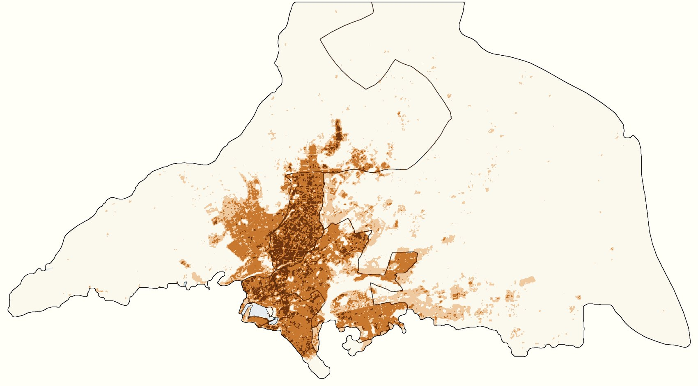

Plate III · Urban growth · 2000–2020
Karachi, the City That Stacked
Nine and a half million more people in twenty years, and only a fifth more building to hold them.
- Population
- +72% 13.2 → 22.8 M
- Building footprint
- +20% 197 → 237 km²
- People per km² of footprint
- +43% 67,100 → 95,800
- Growth in every district
- 72–74%
Karachi's population roughly doubled between 2000 and 2020. That much is well known. Gridded population data lets you ask a sharper question: did the city build enough to house those people, or did it fit them into the buildings it already had?
The answer matters because the two put very different demands on a city. New neighbourhoods need new roads, pipes and schools; crowding into old ones strains the water, transport and services that are already there. I compared two layers from the EU's Global Human Settlement Layer for Karachi Division, the five districts of the city and its hinterland: GHS-POP, residents per 100 m cell, and GHS-BUILT-S, square metres of building footprint in the same cells.


Where the growth landed
Subtracting 2000 from 2020, cell by cell, shows the change. Every district grew by between 72 and 74 percent, and almost nowhere lost people. The heaviest gains, more than 300 extra people per cell, fall inside the districts that were already the densest in 2000, not on the open land around them. The city's edge moved out only a little, in thin bands to the north and east.

Stacked, not spread
GHS-BUILT-S measures building footprint: the area under roofs, not the floor space inside. Over the same twenty years it grew by only 20 percent, from 197 to 237 km². For every new square kilometre of roof, Karachi took in roughly a quarter of a million people, and the number of residents per square kilometre of footprint rose from 67,100 to 95,800.
The same pattern holds in every one of eleven neighbourhoods I sampled, each a 2 km circle around its approximate centre. In the old core, population grew by 60 to 73 percent while footprint barely moved. Even on the fringes, where most of the new building went up, people still outpaced roofs.
| North Nazimabad | +70% · +3% |
|---|---|
| Lyari | +60% · +5% |
| Gulshan-e-Iqbal | +68% · +6% |
| Orangi Town | +53% · +6% |
| Korangi | +70% · +8% |
| Saddar | +73% · +9% |
| Landhi | +57% · +12% |
| DHA and Clifton | +73% · +12% |
| Bin Qasim | +61% · +27% |
| Surjani Town | +93% · +32% |
| Scheme 33 | +90% · +50% |
The growth also sped up. Between 2015 and 2020 alone, Karachi Division gained about four million residents while its footprint grew by roughly seven square kilometres.
Why it stacked
The data shows the pattern, not its causes, but a few explanations fit it. Karachi is Pakistan's largest city and its economic centre, and migrants have arrived faster than housing could be built. Existing housing absorbed the difference: plots subdivided, more households sharing a unit, extra storeys added. Because the footprint layer records roof area rather than floor area, none of these register as new building, which is exactly what the maps show. And the open land at the edge is arid and poorly served by water and transport, so new schemes there have grown, but nowhere near fast enough to take the increase.
One caution. GHS-POP is not a head count: it spreads census totals across each area using the built-up layers, so its finest detail partly follows the buildings. The totals, and the gap between people and roofs, are the robust part.